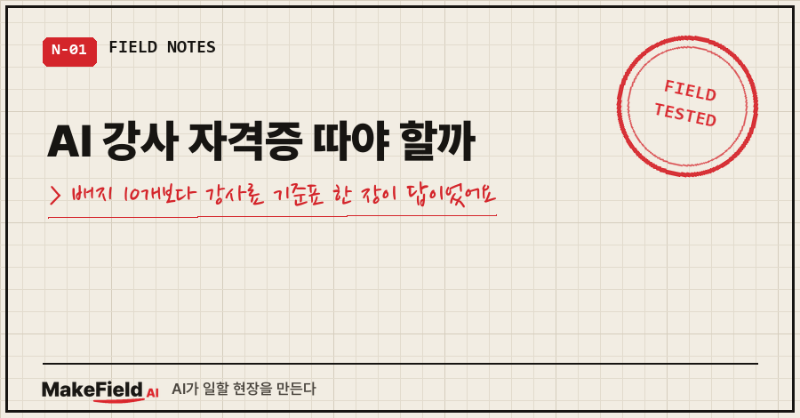
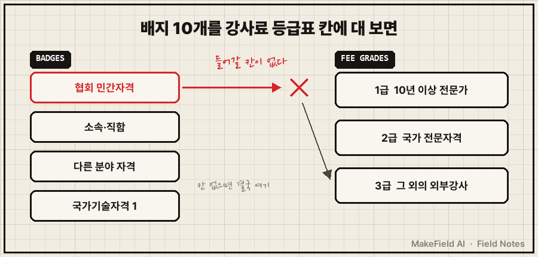
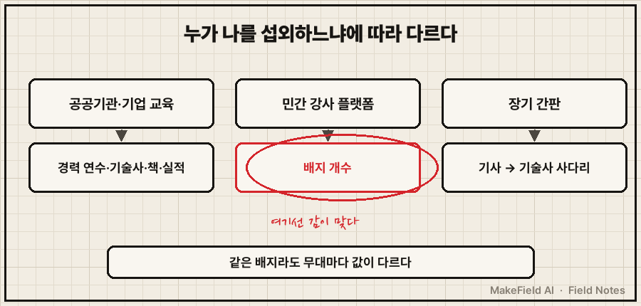
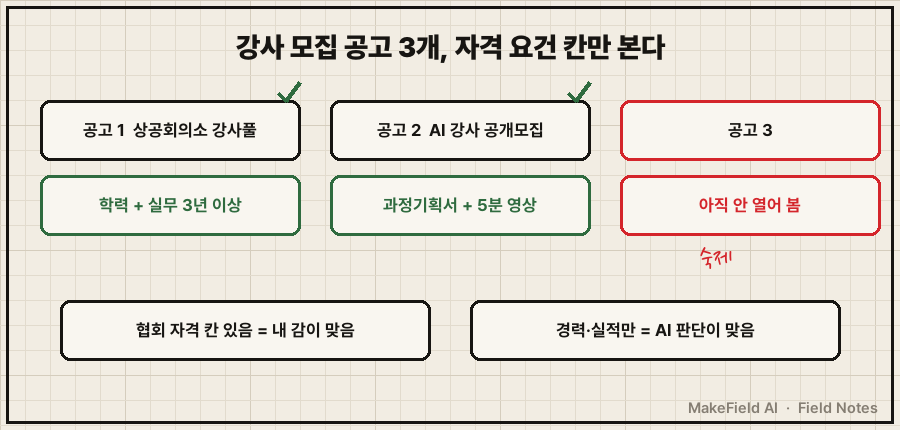

"아니 근데 우리니라에선 저게 더 강한거같은데..."
AI 강사 자격증을 따야 하냐고 물었다가, 밤 0시 35분에 AI한테 보낸 제 반박이에요. 오타도 그대로 둡니다.
AI가 "이 목록에서 지금 따야 할 자격증은 없습니다"라고 답한 지 14초 만이었어요.
그 33초 뒤 AI가 들고 온 건 의견이 아니라 공공기관 강사료 기준표 원문이었습니다.
핵심부터요. 공개된 공공기관 외부강사 강사료 기준표 두 장을 열어 보면 등급을 가르는 칸은 '해당분야 전문가(10년이상 활동경력)', '변호사, 공인회계사, 변리사 등 전문자격 소지자' 같은 경력·국가 전문자격이고, 협회 민간자격으로 등급을 정한 조항은 없었어요. 그래서 이 자격증을 딸지 말지는 배지 개수가 아니라, 내가 노리는 곳의 '값 매기는 칸'에 그 자격이 들어가는지로 판단하는 게 맞았습니다.
낮엔 공장 자동화 일을 15년째 하고, 퇴근 뒤엔 AI 쓰는 법을 책과 강의로 나누고 있어요. 강의를 조금씩 늘려 보려는 참이라 남의 강사 프로필이 자꾸 눈에 밟히더라고요.
1. 배지 10개 붙은 AI 강사 프로필, 뭐가 들어 있었나?
11월 19일에서 20일로 넘어가던 밤, 한 AI 강사 프로필을 캡처해서 바탕화면에 두고 이렇게 물었어요.
바탕화면에 sample.png 이라는 파일 봐. 내가 따야할 자격증이 있나?프로필엔 자격·경력 배지가 열 개 붙어 있었어요. AI는 이걸 네 갈래로 나눴습니다.
| AI가 나눈 갈래 | 내용 | AI 판정 |
|---|---|---|
| 협회·진흥원 민간자격 | 'AI ○○ 강사'류 | 거의 쓸모없음(항목별 확인은 안 해서 추정) |
| 소속·직함 | 협회 교수, 연구원, 컨설턴트 | 자격증이 아님 |
| 다른 분야 자격 | 어학 교원·복지 계열 | 무관 |
| 국가기술자격 | IT 기사 1개 | 진짜 공인 자격, 다만 AI 강사 섭외엔 약함 |

결론은 "지금 딸 건 없다"였어요. 예외도 하나 붙였고요. 강사 등록 신청서가 자격증 칸을 필수로 요구하면, 그 공고를 본 다음 가장 싸고 빠른 것 하나만 따면 된다고요.
2. "한국은 배지 사회 아니야?" 반박에 AI는 뭘 했나
솔직히 납득이 안 됐어요. 우리나라는 간판이 센 나라잖아요. 그래서 14초 만에 위의 반박을 보냈습니다.
여기서 AI가 한 일이 이 글의 전부예요. 제 감과 자기 판단을 맞붙이지 않고, 돈을 실제로 매기는 표로 판을 옮겼어요. 웹에서 공공기관 강사료 지급 기준을 찾아 왔는데, 그중 한 장을 원문 PDF로 열어 보면 이렇습니다. 국가법령정보센터에 첨부된 한 기관 규정의 [별표 3]이에요.
1급 강사 4. 해당분야 전문가(10년이상 활동경력)
5. 그 밖에 위의 각 호에 상당하다고 인정되는 사람
기본(1시간이내) : 230,000원
2급 강사 2. 변호사, 공인회계사, 변리사 등 전문자격 소지자
3. 해당분야 전문가(3년이상 활동경력)
기본(1시간이내) : 120,000원
3급 강사 1. 그 외의 외부강사
기본(1시간이내) : 100,000원다른 지자체 교육원 강사수당 기준도 1급 칸에 '기술사, 세무사 등 전문자격증을 가진 자로서 5년 이상 실무경력자'를 두고 있었어요.
두 장 어디에도 협회 민간자격이라는 말은 없었습니다. 표 구조로 보면 칸에 못 들어가는 배지는 '그 외의 외부강사'에 남아요. 같은 1시간이 등급에 따라 기본 10만 원과 23만 원으로 갈리고요.
다만 표에는 '그 밖에 위의 각 호에 상당하다고 인정되는 사람'이라는 칸이 있어요. 민간자격을 그 칸으로 쳐줄지는 기관 재량이라, "절대 안 된다"고까지는 못 씁니다.
3. AI도 내 말이 맞다고 한 자리
AI가 저를 일방적으로 이긴 이야기는 아니에요. 이렇게 답했거든요.
"민간 강사 중개 사이트, 평생교육원 홍보물, 강사 프로필 카드에서는 배지 개수가 첫인상을 만드는 건 사실로 보입니다. … 그래서 '효과가 0'이라고는 하지 않겠습니다."
그러고는 무대별로 표를 나눠 줬어요.
| 노리는 무대 | 센 간판 | 할 일 |
|---|---|---|
| 공공기관·기업 교육 | 경력 연수, 기술사, 책, 강의 실적 | 자격증 불필요, 경력·저서를 이력서 앞에 |
| 민간 강사 플랫폼·평생교육원 | 배지 개수 | 신청서에 자격 칸이 실제로 있는지 확인 후 가장 싼 것 1개 |
| 장기 간판 | 기술사 | 내 분야 국가기술자격 사다리(기사→기술사), 시간이 많이 드는 장기전 |

제 감은 틀린 게 아니었어요. 감이 통하는 무대와 기준표가 통하는 무대가 달랐을 뿐이에요.
여러분도 자격증 공부를 시작하기 전에, 그 자격증이 어느 무대에서 값을 받는지 먼저 따져 보셨나요?
4. 판정법: 강사 모집 공고 3개의 '자격 요건' 칸
AI가 마지막에 남긴 건 판정법이었어요. 노리는 강사 모집 공고 3개만 열어서 자격 요건 칸을 보라고요. 거기에 협회 자격증이 적혀 있으면 제가 맞고, 경력·학위·실적만 있으면 AI가 맞다는 거죠.
그날 대화는 그 세 개를 숙제로 남기고 끝났어요. 그런데 이 글을 정리하면서 기록을 뒤져 보니, 한 달 전 부업 조사 때 AI가 원문으로 열어 둔 공고 두 건이 이미 있더라고요. (AI로 사업 아이디어 검증한 글에서 강사료를 따질 때 본 그 공고예요.)
| 공고 | 기록에 옮겨 둔 자격 요건 |
|---|---|
| 한 지역 상공회의소 2026 강사풀 모집 | '전문대 졸업 이상 + 해당 분야 실무 3년 이상' 등 |
| 한국생산성본부(KPC) 2026 AI 강사 공개모집 | 학력·연령 제한 없음, 제출물은 1일 7시간 이상 과정기획서와 5분 영상 |
두 건 다 제 기록엔 협회 자격 얘기가 없어요. 대신 실무 경력, 그리고 "직접 과정을 짜서 보여 달라"였습니다. 공고 전문을 이번에 다시 대조한 건 아니라서 2 대 0으로 단정하진 않을게요. 세 번째 공고는 아직 못 열었어요.

5. 자주 묻는 질문
Q. AI 강사 자격증, 아예 쓸모가 없나요?
아니요. 민간 강사 플랫폼처럼 프로필 카드로 첫인상을 겨루는 곳에선 배지 개수가 먹힐 수 있어요. 다만 공공기관 강사료 기준표 두 장에선 그 자격이 들어갈 칸을 못 찾았어요. 따기 전에 노리는 곳이 어디인지부터 정하는 게 순서예요.
Q. 이미 경력이 긴데도 강사료가 낮게 나오면요?
기준표 1급 칸에 '해당분야 전문가(10년이상 활동경력)'가 있어요. 배지를 늘리기보다 경력 연수와 실적(책·강의 이력)을 신청서 앞쪽에 증빙하는 쪽이 이 표에선 직접 효과가 있습니다.
Q. AI한테 이런 걸 물을 때 요령이 있나요?
"따야 할까?"보다 "돈 매기는 기준표 원문을 찾아서 이 자격이 들어갈 칸이 있는지 대조해 줘"가 낫더라고요. 의견 싸움이 문서 대조로 바뀌고, 저처럼 반박해도 근거로 다시 얘기할 수 있어요.
응시료 결제 버튼을 누르기 전에, 그 배지가 들어갈 칸이 있는지부터 대 보세요. 칸이 없는 배지는 첫인상이고, 칸이 있는 경력은 단가예요. 세 번째 공고를 열어 보면 그 결과도 이어서 적어 볼게요.
사내 AI 교육을 어떤 기준으로 고를지 고민하는 담당자분이라면, 제가 하는 교육과 책 이야기는 makefield.ai에 정리해 두었습니다.
출처
- 국가법령정보센터 첨부 [별표 3] 강사료 및 원고료 지급 기준 → https://www.law.go.kr/LSW/flDownload.do?flSeq=158997993 (2026-11-22 원문 확인)
- 강원특별자치도공무원교육원 강사수당 지급기준 1급 문구 (2026-11-22 원문 대조 기록)
- 실측: 개인 AI 대화 기록 2026-11-20 00:35~00:36(남의 프로필 이름·협회명·배지 명칭 제외), 2026-10-18 강사 모집 공고 조사 기록
태그: #AI강사자격증 #AI강사 #민간자격증 #민간자격증필요할까 #강사료 #외부강사강사료 #강사료지급기준 #강사등급 #강사모집공고 #자격요건 #국가기술자격 #기술사 #AI로판단하기 #AI오답노트 #MakeFieldAI